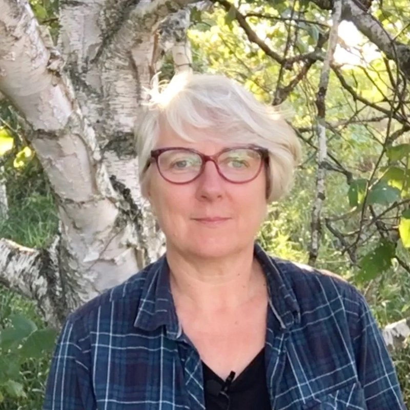

Adjunct Faculty / Sylvia Keesmaat

About Me
Dr. Sylvia Keesmaat is a biblical scholar, activist and farmer. She obtained her doctorate at Oxford University, studying with N.T. Wright, and has most recently taught as an Adjunct Professor of Biblical Studies at Trinity College, Toronto School of Theology, as well as for the Creation Care Studies Program in Belize. Sylvia is the co-author, with Brian Walsh, of Romans Disarmed: Resisting Empire, Demanding Justice (Brazos Press, 2019) and Colossians Remixed: Subverting the Empire (IVP, 2004).
In addition to being the co-chair of the Bishop's Committee on Creation Care for the Anglican Diocese of Toronto, Sylvia speaks frequently on topics related to the Bible and economic justice, climate catastrophe, gender justice, and Indigenous justice.
Sylvia founded Bible Remixed (www.bibleremixed.ca) in 2021 to help nurture a community of Jesus followers who are deeply rooted in the biblical story, and who are becoming a community of welcome, healing and nurture for those people and creatures who suffer most from the violence of our world.
Sylvia lives at Russet House Farm (www.russethousefarm.ca), an off-grid permaculture farm in the Kawartha Lakes on the traditional territory of the Michi Saagiig Nishnaabeg, with her husband, Brian Walsh, and a fluctuating number of people and animals.
Files
- My Curriculum Vitae (CV) [updated 2022]
Teaching
Courses and Syllabi
- My current and recent ICS courses and syllabi can be found here on the ICS Course Catalogue.